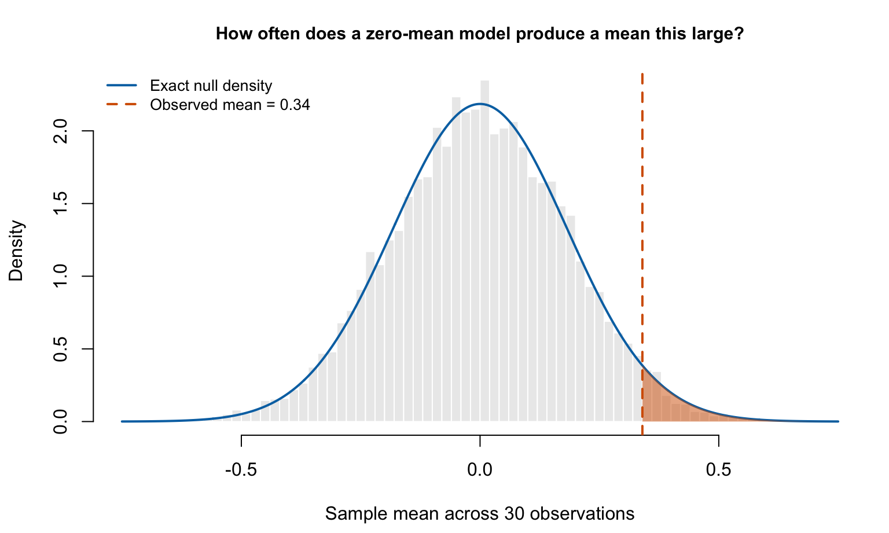

set.seed(42) # Make the simulation reproducible.
n <- 30
obs_stat <- 0.34
repetitions <- 10000
null_stats <- replicate(repetitions, mean(rnorm(n, mean = 0, sd = 1)))
p_sim <- mean(null_stats >= obs_stat)
p_exact <- pnorm(obs_stat, mean = 0, sd = 1 / sqrt(n), lower.tail = FALSE)
stopifnot(abs(p_sim - p_exact) < 5 * sqrt(p_exact * (1 - p_exact) / repetitions))Does p = 0.03 mean a 97% chance of being right?
Imagine reading a study that reports \(p=0.03\). Does that mean its conclusion has a 97% probability of being correct? No. Understanding why matters whenever we use statistical results to judge a policy, a business decision, or a scientific claim. The question this post answers is: what probability does a p-value actually measure, and what can we conclude from it?
This distinction is important enough that the American Statistical Association’s statement on p-values explicitly addresses it. A p-value does not give the probability that the tested hypothesis is true. To see what it does give, we need to separate two questions that sound similar.
Start with the direction of the question
We often want to ask, “Given these results, how plausible is my hypothesis?” A significance test instead asks, “If the null model were correct, how often would results this extreme or more extreme occur?” The first question concerns the hypothesis after seeing the data; the second concerns possible data under an assumed hypothesis.
An analogy helps: knowing that a professional basketball player is likely to be tall does not tell us that a tall person is likely to be a professional basketball player. Reversing the condition changes the question. In statistics, a posterior probability such as \(P(H_0\mid\text{data})\) requires a model for the alternatives and prior probabilities, not just a p-value.
We can make that distinction concrete by constructing a world where the null hypothesis is true from the outset.
Build a simple null world
Suppose we observe 30 independent measurements on a standardized outcome and want to test whether its population mean is positive. Our hypothetical observed sample mean is 0.34. Assume the observations are normally distributed with a known standard deviation of 1. These are teaching assumptions, not data from an actual study.
The null hypothesis is \(H_0:\mu=0\), and the alternative is \(H_1:\mu>0\). Because we specify a positive direction in advance, this is a one-sided test. Its p-value is
\[ p=P(\bar X\geq 0.34\mid\mu=0,\text{ assumed sampling model}). \]
Here, \(\bar X\) is the sample mean. Under the null, it varies around zero with standard deviation \(1/\sqrt{30}\). The p-value measures the right-tail probability beyond 0.34. It does not measure the probability of observing exactly 0.34 or the probability that \(\mu=0\).
Use simulation to make the probability visible
The R code below repeats this hypothetical experiment 10,000 times. Each repetition draws 30 observations from the null model and records their mean. Counting the means at least as large as 0.34 approximates the probability in the equation. Simulation is useful here because it turns an abstract conditional probability into a fraction of repeated experiments.
rnorm() generates observations, replicate() repeats the experiment, and the final mean() of the comparison counts the fraction meeting our threshold. pnorm() calculates the exact normal tail probability for comparison; it does not simulate another set of experiments.

The simulated fraction is 2.9%, close to the exact value of 3.13%. Thus, under our zero-mean model, about 3.1 in every 100 repetitions would produce a mean at least this large. The small difference between simulation and calculation is Monte Carlo variation. A two-sided test would also count equally extreme negative means and answer a different question.
What should we conclude?
The observed mean is unusual under the specified null model, providing evidence against it. But every simulated experiment assumed the null was true: we never generated a mixture of true and false hypotheses. The simulation therefore cannot tell us what fraction of hypotheses are true after a small p-value appears.
Nor does a small p-value establish that an effect is economically important. Here, the estimated mean is 0.34 standardized units; its practical meaning depends on the outcome and context. Assumptions, uncertainty, study design, and whether the test was chosen before looking at the data also matter. A large p-value, conversely, would not prove that the mean is zero.
The takeaway is to read a p-value as a statement about results under a model. Report what was estimated and how uncertain it is, and resist translating \(p=0.03\) into “97% certain.” That translation answers a question the test never calculated.
Reference
Wasserstein, R. L., and Lazar, N. A. (2016). The ASA’s Statement on p-Values: Context, Process, and Purpose. The American Statistician, 70(2), pages 129 to 133.